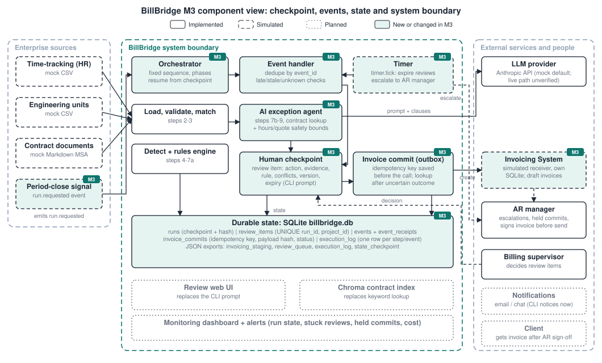
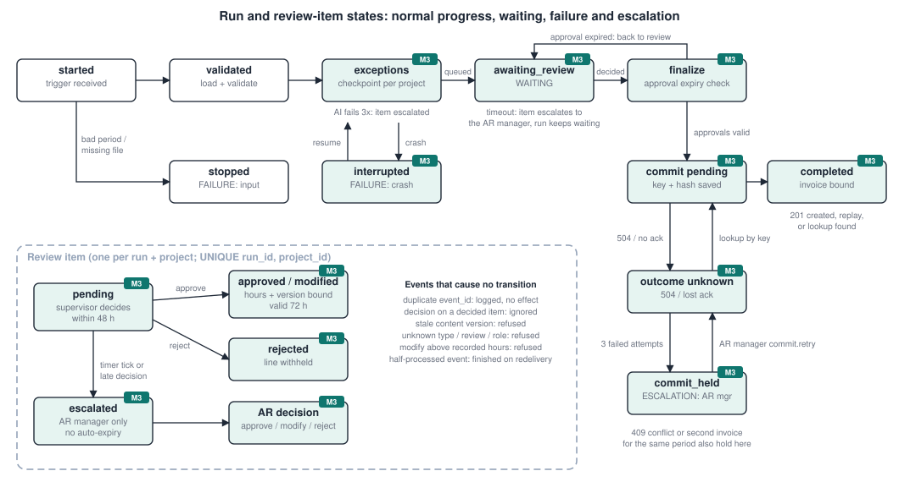
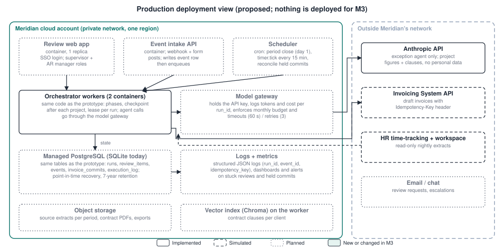

github.com/drivercd/bill_bridge (code in billbridge/, design in docs/m3/) · All data is syntheticM2 ran the reconciliation pipeline end to end in one process, with a simulated supervisor that approved every exception by default and a checkpoint file written only for audit. M3 makes the pipeline safe to pause and resume. A run now stops at a human checkpoint when there are exceptions, keeps its state in SQLite instead of process memory, continues when a decision event arrives (from a new process if need be), and loads one draft invoice into a simulated Invoicing System using an idempotency key that is saved before the call. The deterministic steps, the bounded agent and the M2 numbers are unchanged: the mock period still auto-clears 17 of 20 projects (85%), and P-102 is still capped at 30.0 h citing §4.2.
| Change | Why | Feedback or finding it addresses |
|---|---|---|
Simulated supervisor no longer approves by default; a run pauses with status awaiting_review | An exception reaching the invoice without a person deciding defeats M1 Decision 3 | Team reliability review (16 Oct): the default approval in review.py let any recommendation through |
| Reviewer sees conflicts computed by code, e.g. §4.2 vs §4.1 for P-102 | A cited, confident recommendation can still rest on one of two readings of the contract | Reliability review: P-102's 30.0 h needs make-ready justification that the data does not contain; the §4.1 reading gives 27.6 h |
| Agent output must not exceed recorded hours or the contract hard cap, and quotes must be verbatim | The M2 validator accepted a 120 h answer with an invented quote at 0.99 confidence | Reliability review, safety dimension |
| Durable state, per-project checkpoint, resume | M2 restarted from the beginning after any stop | M2 §3.2 listed resume-from-checkpoint as planned for M3 |
| Invoicing System integration (simulated) with idempotency and lookup | Loading the invoice is the first action with an effect outside BillBridge | M2 status table: invoicing integration planned; team recovery-path design (Condition 2) |
| Escalation owner named: AR manager | Owns billing rules and signs invoices; the supervisor reviews exceptions | Team clarification of roles (23 Oct) |
[Team: add the instructor's written M2 feedback here and say which change answers it.] We did not have it in the project files when this draft was written.

| Decision | Rationale | Alternative | Trade-off | Evidence (M3) |
|---|---|---|---|---|
| D3 (updated) Every exception needs a human decision; nothing is auto-approved, even on timeout | Billing is a financial control point; confidence is uncalibrated | Auto-approve high-confidence items; or approve on timeout | Supervisor time and a 48 h wait per exception; the AR manager becomes a second queue | 3 of 20 projects reach the checkpoint. A 49 h-old item escalated to the AR manager and a late supervisor approval was refused (case 2b); zero invoices until a decision |
| D2 (updated) Recommendations must cite retrieved clauses and pass safety bounds | Citations alone did not stop wrong answers | Shape-only validation (M2) | A legitimate change-order above the cap is refused and goes to a person | Validator now rejects 120 h and a non-verbatim quote (unit test); P-102 conflict shown to the reviewer |
| D4 (new) Durable run state in SQLite, checkpoint after every step and every project; resume instead of restart | A pending review can wait days; a crash must not repeat model calls or extraction | Restart from the beginning (M2); or a workflow engine such as Temporal | Hand-written phases and single-writer SQLite; a real deployment moves to PostgreSQL | Worker killed inside the agent step: resume skipped load and validation (load ran once), made 1 model call, created exactly 3 review items; a further resume changed nothing (case 4a) |
| D5 (new) Every event has an id recorded before it is applied; every external commit has an idempotency key saved before the call; after an uncertain outcome, look up before resending | Webhooks redeliver, people double-click, and a 504 does not mean the invoice was not created | Retry blindly; or send at most once and ask a person on any error | Needs a receiver that honours keys and supports lookup; a held commit waits for the AR manager | Same event 3 times and a double click: one effect. 503 then success: one key, one invoice. 504 after creation: lookup bound to the existing invoice, receiver count 1 (cases 3, 4b) |
| D6 (new) Approval is bound to one line, one content version and a 72 h execution window; BillBridge loads a draft and the AR manager signs the invoice before it is sent | An approval must not authorize content the reviewer did not see, or be used weeks later | One approval for the whole invoice inside BillBridge (team Checkpoint 2 design) | Two places to look (BillBridge and the invoicing system); BillBridge cannot prove the send-time sign-off happened | A decision on an old version is refused as stale; approvals older than 72 h at load time are reopened for review (tests) |
| Action | Effect | Approach | Justification (stakes and reversibility) |
|---|---|---|---|
| Read time-tracking, units and contract files | none | No human review | Read-only; a failed read stops the run and notifies the supervisor |
| Send project figures and clauses to the LLM provider | spends money; data leaves | Monitoring with intervention | About $0.03 per call (section 6); only project figures and contract text, no personal data. A gateway budget cap and per-run token log let an operator stop spend |
| Stage an auto-cleared line (within ±15%) | changes a record | Later audit | Deterministic rule, billed as recorded per §4.1; still only a draft until AR sign-off. Monthly sample audit |
| Stage a rules-engine adjustment (simple exception) | changes billed amount | Approval before execution | Changes the amount the client pays; M1 Decision 3. Low effort to review (one rule, one citation) |
| Stage an AI-recommended adjustment (complex exception) | changes billed amount | Approval before execution (implemented checkpoint) | Highest stakes per line and the model can be confidently wrong; reversible only by credit memo once sent |
| Load the draft invoice into the Invoicing System | changes another system | Monitoring with intervention | Automatic once every line is authorized; idempotent; a draft can be voided; totals checked against staging; held loads go to the AR manager |
| Send the invoice to the client | sends; money | Approval before execution (AR manager, in the invoicing system) | Hard to reverse; outside BillBridge and unchanged from today's process |
| Change a client billing rule (memory record) | changes a rule for all future runs | Approval before execution (AR manager only) | Affects every later invoice; the agent can cite rules but never write them |
| Notify supervisor or AR manager; escalate on timeout | internal message | No human review | Low stakes; the escalation is itself the human route |
When. Only for exceptions: in the mock period 3 of 20 projects (P-102 complex; P-107 and P-114 simple). Clean projects bypass it.
Who. The billing supervisor decides within 48 hours. If no decision arrives, the timer escalates the item to the AR manager, who is the only role allowed to decide escalated items and to release a held invoice load. Roles are checked on every decision event.
What the reviewer sees (example below, from python -m billbridge review --show): the proposed action and what it does not authorize, the evidence (hours, units, ratio, variance), the applicable clause with its quote, conflicts that code detected, the content version and the expiry.
What approval authorizes. Action: stage this line on the period's draft invoice. Target: run, period, client and project. Content version: a 12-character hash of the proposal; a decision on any other version is refused as stale. Hours: the proposed value, or the reviewer's value for modify (between 0 and recorded hours). Expiry: the approval must be executed within 72 hours or the item reopens for review. It does not authorize sending the invoice, changing rates or changing billing rules.
After the decision. Approve or modify: recorded with reviewer, role, time and event id; when every item is decided the run finalizes and loads the draft invoice. Reject: the line is withheld, listed in the review queue with the reason, and the rest of the invoice proceeds. Timeout: nothing is staged, the item escalates to the AR manager, the run keeps waiting, and a late supervisor decision is refused.
==========================================================================
REVIEW RV-demo0001-P-102 project P-102 client NLT period 2026-09
status: pending decided by: supervisor content version: 39b4b358e145
expires: 2026-11-05T02:26:10+00:00
--------------------------------------------------------------------------
PROPOSED ACTION
Stage 30.0 billable hours on the draft invoice (source: ai_agent).
Approval does NOT authorize: sending the invoice to the client,
changing rates, or changing client billing rules.
EVIDENCE
recorded 120.0 h for 3 pole_attachment units = 40.0 h/unit
vs 8.0 standard (+400%)
complex exception: overrun +400% vs standard, beyond the capped band
explanation: Recorded 120.0 h for 3 units (40.0 h/unit) far exceeds
the 8.0 h/unit standard. Section 4.2 allows billing up to 10.0 h/unit
for complex make-ready work with supervisor approval; hours above
that are absorbed.
confidence: 0.82
APPLICABLE RULE
§4.2: "Where field conditions require make-ready engineering beyond
standard scope (for example, pole replacement, crowded communication
space, or utility-requested redesign), hours may be billed above the
standard up to a cap of 10.0 hours per unit"
CONFLICTS
! §4.2 (make-ready, up to 10.0 h/unit) applies only with documented
make-ready justification, and the source data contains none.
Without it, §4.1 caps billing at 27.6 h (2.4 h less).
note: Confidence is self-reported by the model and is not calibrated
(no labeled set yet).
==========================================================================
[a]pprove [m]odify [r]eject [s]kip >
Figure 2. Reviewer view for P-102 (mock model). The conflict line is computed by code, not by the model.
Event path. Decisions arrive as review.decision events from the CLI prompt or as JSON files dropped in an inbox folder (a simulated webhook, examples/inbox/). Other events: timer.tick (expire overdue reviews), run.requested (period close) and commit.retry (AR manager releases a held load). The handler records the event id in SQLite before acting, checks it against saved state, applies it with a compare-and-set on the review status, then resumes the run from its checkpoint.
Saved state (billbridge.db): runs (full run state as JSON plus a SHA-256 that is verified on load; saved after every step and every project), review_items (unique per run and project), events and event_receipts (every delivery, including duplicates), invoice_commits (idempotency key, payload hash, status, attempts, external invoice id) and execution_log. Nothing needed to resume is held only in memory.

awaiting_review), failure (stopped, interrupted, outcome unknown) and escalation (escalated item, commit_held).| Current state | Event or observation | Check before acting | Next state | Effect / evidence saved |
|---|---|---|---|---|
| exceptions | project finished | none | exceptions (next project) | checkpoint with hash |
| exceptions | worker crash in agent call | on resume: hash intact; project marked agent: in_progress? | interrupted → exceptions | partial work discarded and logged; finished projects skipped |
| exceptions | all projects done | review item already exists for run + project? | awaiting_review | one item per exception (unique key) |
| awaiting_review | review.decision | event id new? item pending? within window? role allowed? version current? hours in range? | awaiting_review or finalize | decision, reviewer, role, event id, authorized hours, approval expiry |
| awaiting_review | timer.tick past expiry | item still pending? | awaiting_review (item escalated) | AR manager notified; nothing staged |
| finalize | all items decided | every approval younger than 72 h? | commit pending, or back to review | staging and review-queue exports |
| commit pending | about to call the API | key and payload hash saved? another commit for this period? | commit pending, or held | key, hash, attempt count |
| commit pending | 201 created, or 200 replay | invoice total and line count equal staging? | completed, or held | external invoice id, how it was bound |
| commit pending | 504 / socket drop | do not assume failure; keep the same key | outcome unknown | error and time |
| outcome unknown | retry | look up the key first; found → bind, not found → resend same key and payload | completed or outcome unknown | lookup result |
| any commit state | 3 failed attempts, or 409 conflict | no new key is ever issued | commit_held | AR manager notified with evidence |
| commit_held | commit.retry by AR manager | role is AR manager; run is held | outcome unknown (lookup first) | who released it |
Duplicate events. A repeated event id has no effect and is logged as a duplicate. A second decision with a new id for an item that is already decided (a double click, another tab) is ignored, and the first decision stands. A second period-close signal starts no second run, and a second run for an already-invoiced period is held rather than creating another invoice. Late events. A decision after the review window is refused and the item escalates. An approval that is not executed within 72 hours is reopened. Unexpected events. Unknown types, unknown review ids, unknown roles, stale versions and out-of-range hours are refused and logged, and state does not change. If the process dies after recording an event but before applying it, the redelivered event is finished, not dropped as a duplicate. Safe retries. Model calls retry up to 3 times (no external effect). Invoice loads retry up to 3 times with the same key and backoff (2, 4, 8 s). Success with lost confirmation. BillBridge treats a 504 as unknown, looks the key up in the receiver, and binds to the invoice that already exists.
Every case runs on a fresh copy of the mock data and fresh databases (python scripts/m3_cases.py; output in docs/m3/test_evidence.md). Effects are counted in the simulated Invoicing System's own database, not in BillBridge's records. The full suite (python -m pytest) has 30 tests: 12 from M2, all still passing, and 18 for M3.
| Case | Input | Expected | Actual | Evidence | Interpretation |
|---|---|---|---|---|---|
| 1. Approved run PASS | Period 2026-09, 20 projects. Supervisor approves P-102 (30.0 h), P-107, P-114 via decision events handled by a new process | Pause with 3 items, 0 invoices; then 1 draft invoice, 20 lines, P-102 = 30.0 h | Paused with 3 items and 0 invoices. After approvals: completed; receiver holds 1 invoice, 20 lines, 863.5 h, P-102 = 30.0 h | Receiver invoices table; approval record with version and expiry | The pending review survived the process; the authorized action happened once |
| 2. Rejection and timeout PASS | (a) Reject P-102, approve the others. (b) P-102 only, no decision; timer at +49 h; then a late approval | (a) Invoice has 19 lines, no P-102; P-102 in queue as rejected. (b) Escalated to AR manager, no invoice, late approval refused | (a) P-102 rejected; 19 lines; P-102 absent. (b) Tick escalated P-102 to ar_manager; late approval rejected; 0 invoices; run still waiting | Review queue export; receiver count; event outcome | Withheld actions stay withheld; timeout escalates instead of approving |
| 3. Duplicate event and retry PASS | Event webhook-7f3a 3 times (2 processes); a second approval with a new id; one 503 from the API; period-close event twice | One decision applied; one key; one invoice; one run | applied, duplicate, duplicate, ignored; requests: 503 then 201 on one key; 1 invoice. Period close: applied, duplicate; 1 run, 1 invoice | event_receipts; receiver requests log | Repetition caused no extra effect at either the event or the API level |
| 4. Interruption and uncertain outcome PASS | (a) Worker dies inside the agent call for P-102; resume in a new worker; resume again. (b) The API creates the invoice but the reply is lost (504) | (a) Finished steps skipped, 1 model call, 3 review items. (b) Lookup before resend; 1 invoice | (a) Load step ran once in total; 1 model call on resume; 3 items after two resumes. (b) Requests: "201 created, ack lost (504)", then "lookup: found"; bound; 1 invoice | Execution log; review_items; receiver requests | Recovery uses saved state and checks the receiver before acting |
Failures we hit and what we did. Our first version of case 3 failed: we sent the period-close event to the same system where the P-102 run had already invoiced September, and BillBridge held the new run instead of loading a second invoice. The guard was correct and the test was wrong, so we moved that part to a clean system and kept a separate test that the guard holds a second run for an invoiced period. Not yet tested: the live model path with a real API key (the mock is used in every case above), and concurrent workers on one database.

Volume assumption (stated, not measured): 3 clients, 600 projects per month. Exception mix taken from the mock period: 10% simple, 5% complex, so 60 simple and 30 complex exceptions. Only complex exceptions call the model; we assume 1.2 attempts on average (M2 retry path), so 36 calls per month.
| Paid model operation | Input tokens | Output tokens | Rate (Claude Opus 5.5) | Cost |
|---|---|---|---|---|
| One exception-agent call | 2,500 (system prompt, project record, 3 clauses, schema; the mock prompt measures about 3,200 characters, so production contracts are assumed longer) | 1,000 (about 250 of JSON plus thinking at low effort) | $4 per million input, $20 per million output | $0.010 + $0.020 = $0.030 |
| Per complex exception (1.2 attempts) | $0.036 | |||
| Per completed task: one billing period (600 projects, 36 calls) | $1.08, or $0.0018 per project | |||
| Monthly cost (estimate) | Amount | Basis |
|---|---|---|
| Model calls | $1 | 36 calls × $0.030. At 10× the volume and 5× the output tokens: about $40 |
| Compute (2 workers, review app, intake API, scheduler) | $60 | small containers, mostly idle outside period close |
| Managed PostgreSQL with backups | $50 | smallest production tier |
| Logs, metrics, object storage | $20 | 7-year retention for billing records |
| Supervisor review time | $450 | 90 exceptions × 6 min = 9 h at $50/h loaded (target ≤ 25 h per cycle) |
| AR manager escalations and sign-off | $100 | about 2 h per month |
| Total | about $680 | versus about $2,000 for manual QC of 600 projects (40 h at 4 min each) |
Strongest cost-saving opportunity. People time, not tokens, dominates. Once the rules-engine path shows a supervisor override rate under 2% for three cycles, simple exceptions could move from approval before execution to later audit of a 20% sample. That saves about 5 hours, or $240, per month. The trade-off is that it relaxes M1 Decision 3: a wrong rule would reach draft invoices until the next audit, with only the AR manager's sign-off in the way. On the token side, the Batch API (50% off) or Claude Sonnet 5.5 ($2/$10) would save under $1 a month, which is not worth any loss of quality.
| Item | Target or limit |
|---|---|
| Completion time users need | Draft invoices within 3 days of period close (M1 target, baseline 15 days). Automated part of a run under 15 minutes for 600 projects; review window 48 h; AR escalation within the third day |
| Model call | 120 s timeout, 3 attempts, then the item goes to the supervisor with no recommendation. Never blocks other projects |
| Invoicing System API | 30 s timeout, 3 attempts with 2/4/8 s backoff on the same key, lookup after any timeout; then held for the AR manager |
| Timer | Every 15 minutes: expire reviews, report held or unknown commits |
| Service unavailable | LLM down: exceptions reach the supervisor without a recommendation. Invoicing down: the load is held with its key; nothing is re-sent under a new key. Source extract missing: run stops and the supervisor is notified. Database down: workers stop; every external call is preceded by a saved intent, so a restart resumes safely |
Each row in execution_log carries the run id, step, actor (code, model or human), status and timestamp, plus the event id, review id, content version, reviewer and role, model attempt and token usage, and the idempotency key and external invoice id where relevant. Together with event_receipts (every delivery, including duplicates) and the receiver's own request log, this reconstructs any run. Alerts in production: a review pending for more than 24 h, any run in commit_held or outcome unknown for more than 1 h, a model failure rate above 10% in a run, a spike in duplicate or refused events, and monthly model spend above budget.
| Member | Individual contribution to M3 |
|---|---|
| Chad Driver | [to be filled in by the team] |
| Jorja Baker | [to be filled in by the team] |
| Minh Pham | [to be filled in by the team] |
| Sao Lognon | [to be filled in by the team] |
| Yohanes Teka | [to be filled in by the team] |
AI-use disclosure. Claude (Anthropic), through Claude Code, drafted the M3 code changes, tests, diagrams and this report from the team's M1 and M2 documents and design notes (checkpoint records, recovery paths, reliability review). [Team: list any other tools used.] The team must review every section before submission. Verification: the test suite and the four report cases were run and their output is in the repository; cost figures are estimates from stated assumptions and published API prices, not measured usage.
Most important remaining limitation. The checkpoint makes sure a person decides, but nothing yet shows whether the agent's recommendation is right. Without a labeled set of complex cases, its confidence is uncalibrated and citation accuracy is unmeasured, and the live model path has not run with a real key. A busy reviewer could approve a wrong but well-argued number, as P-102 shows. Building that labeled set, and measuring supervisor override rates on it, is the next priority.
Credentials and private data: none are in the repository or this report. The API key is read from the environment, and all data is synthetic.